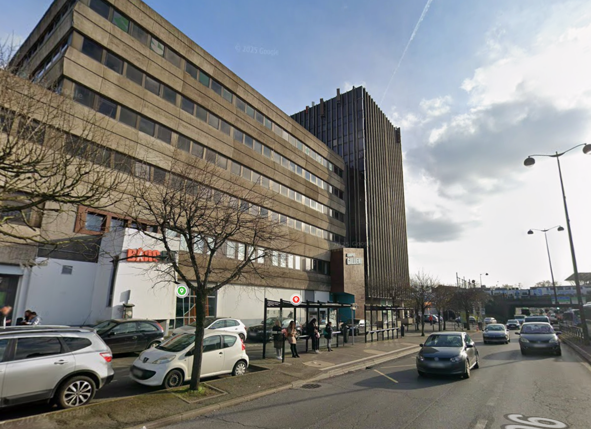
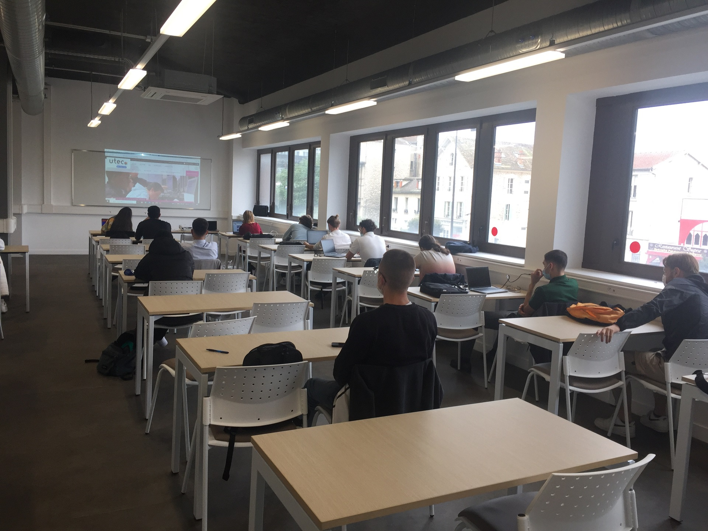

L'UTEC est un établissement de formation pluridisciplinaire et multi-niveaux, reconnu pour son engagement auprès des jeunes, des familles et des entreprises. Forte de près de 40 ans d'expertise dans l'apprentissage, l'école s'appuie sur une équipe pédagogique composée de professionnels issus du terrain, pleinement investis dans la transmission de leur savoir-faire et de la passion de leur métier.
Réputé pour la qualité de son enseignement, le CFA UTEC forme des jeunes professionnels opérationnels et qualifiés, en partenariat étroit avec les entreprises de la région. Implanté dans des locaux modernes et accueillants, il offre un environnement stimulant, propice à la réussite, à l'apprentissage et à l'épanouissement professionnel.
Taux de réussite
Près de 2000 jeunes formés
Entreprises partenaires
L'UTEC place la réussite de chaque jeune au cœur de son projet pédagogique, en proposant un accompagnement individualisé tout au long du parcours de formation. L'établissement favorise également le développement de l'esprit entrepreneurial et valorise les parcours, les compétences et les réussites des apprenants. Il s'engage à promouvoir des valeurs essentielles telles que l'égalité des chances, la diversité, la mixité, la solidarité et l'éco-citoyenneté, tout en participant activement au développement économique des entreprises et des territoires.
À l'UTEC de Melun, les étudiants préparent un BTS SIO (Services Informatiques aux Organisations), une formation en deux ans axée sur les métiers des technologies de l'information et du numérique.
J'ai choisi ce BTS car il allie des enseignements techniques solides à une approche concrète et professionnelle, notamment grâce à l'alternance. Cette formation me permet de développer des compétences directement applicables en entreprise, tout en acquérant une vision globale des systèmes d'information et de leur rôle stratégique au sein des organisations.
En optant pour la spécialité SISR, je me forme à la gestion, à l'administration et à la sécurisation des systèmes informatiques ainsi qu'à l'exploitation des réseaux. Cette option correspond pleinement à mon intérêt pour les infrastructures techniques et les environnements systèmes.
Grâce à cette formation en alternance, je développe les compétences nécessaires pour accompagner les entreprises dans leur transformation numérique et leur garantir une infrastructure informatique performante et sécurisée.
Adresse :
Tour Galliéni 49-51 Av. Thiers, 77000 Melun
Téléphone :
01 60 37 52 25
Du lundi au jeudi : 8h30/12h30 - 13h30/17h
Le vendredi : 8h30/12h30 - 13h30/16h

